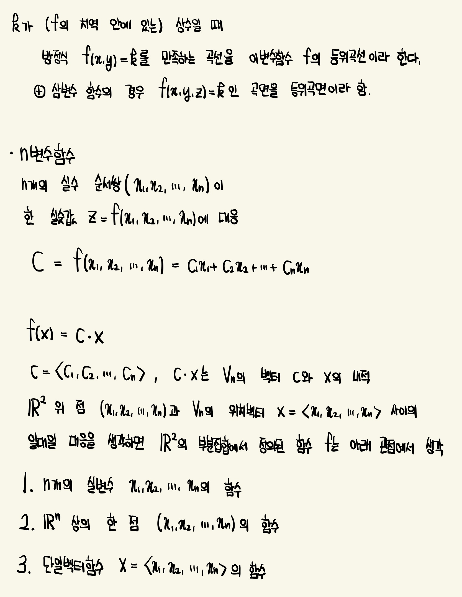
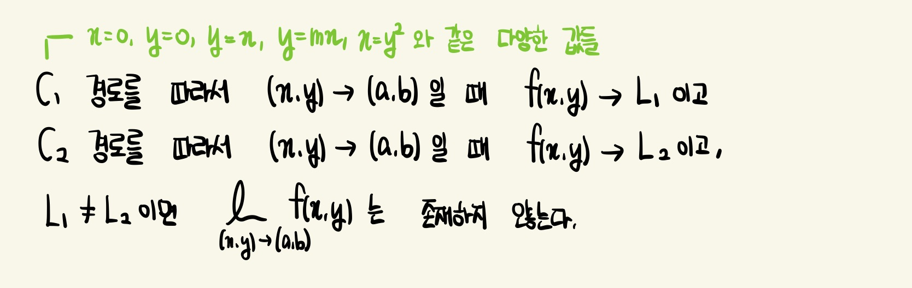
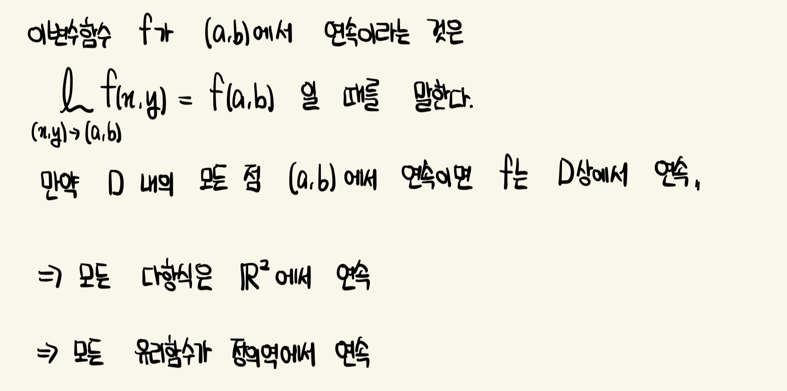

등위곡선 & 등위곡면 (Level Curve & Level Surface)
등위곡선 f(x,y)=k는 함수 f가 주어진 값 k를 갖는 정의역의 모든 점의 집합
=> f의 그래프가 높이 k를 갖는 xy평면 안의 곡선
등위곡선 f(x,y)=k는 수평면 z=k에서 xy평면으로 투영한 f의 그래프들의 자취들
* 등고선 지도(contour map) : 등위곡선을 모아놓은 것

극한이 존재하지 않음 보이기

연속성
연속성의 직관적인 의미는 점 (x,y)가 작은 양만큼 변하면 f(x,y)의 값도 작은 양만큼 변한다는 것
이것은 연속함수의 그래프인 곡면에 어떠한 구멍 또는 갈라진 틈이 없다는 것을 의미
f가 이변수 함수의 연속함수이고, g가 f의 치역에서 정의된 일변수의 연속함수이면, 합성함수 h=g ∘ f 또한 연속함수
